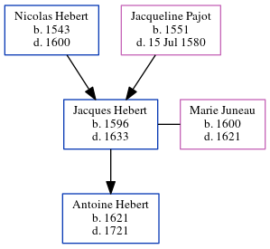

Jacques Hebert 1596 - 1633
[ Home ] | [ Calendar ] | [ Surnames Index ] | [ Census Index ] | [ Family History ]The child of Nicolas Hebert and Jacqueline Pajot, Jacques Hebert, the 11 times great-grandfather of Michele Copp (née Phillips), was born in Touraine, Indre-et-Loire, Centre, France in 15961, and was orphaned at the age of 4 following the death of his mother in 1580 and father in 1600.
He married Marie Juneau (with whom he had 1 child, Antoine) in Touraine in 1620, which is also where he died in 1633.
Parents
- Nicolas was born in 1543
- Jacqueline was born in 1551
Children
- Antoine was born in 1621
Citations
- U.S. and International Marriage Records, 1560-1900 Online publication - Provo, UT, USA: The Generations Network, Inc., 2004.Original data - This unique collection of records was extracted from a variety of sources including family group sheets and electronic databases. Originally, the information was deriv
Family Tree
Generated by ged2site. Last updated on Jun 6, 2024